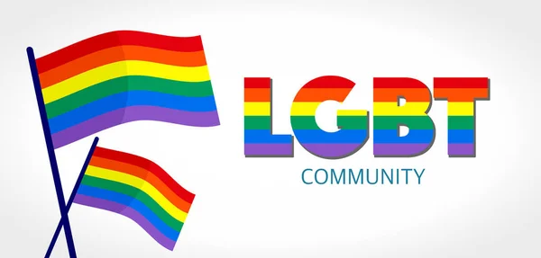

qkqrk підтримав ЛГБТ

У світі, де навіть найнепередбачуваніші створіння мають свою думку, почуття та переконання, існує один особливий герой – окорок. Але не просто шмат м’яса з супермаркету. Ні. Це живий, свідомий, доброзичливий Qkqrk – так його називають друзі. Інші ж знають його як Okorok, а дехто, більш по-свійськи, каже просто: "Окорочок".
Qkqrk народився у старій холодильній камері французького ресторану, де поважали свободу, аромат свіжого базиліку і кожного нового відвідувача, незалежно від його орієнтації. Ще з дитинства – а в окороків це, до речі, три доби – Qkqrk відчував, що його тягне не лише до кулінарії, а й до справедливості, прийняття та веселих кольорів. Коли він уперше побачив веселковий прапор, серце в нього закалатало так сильно, що трохи не тріснув маринад.
– «Я не просто страва, я – союзник!» – проголосив він і вирушив у мандрівку світом, несучи свою ніжність, хрумкість і підтримку всім, хто відчував себе інакшим, але не менш гідним любові.
У Празі Qkqrk взяв участь у першому своєму прайд-параді. Його несли на золотому блюді з написом "М’ясо має право любити кого хоче". Люди махали, посміхались, плакали, коли він розповідав історії про курячі сердечка, які боролись за право бути разом, незважаючи на соуси, традиції та гриль.
– «Любов – це не справа приправ!» – казав він, виглядаючи особливо натхненно з лимонною кіркою на плечі.
Okorok не лише підтримував, він активно допомагав. Він жертвував частину свого соусного фонду для підтримки молоді ЛГБТ, проводив майстер-класи з "теплого прийняття" і завжди залишав місце за столом для тих, кого інші відкидали. У його "М'ясному маніфесті" було написано: "Кожен має право бути тим, ким він є. Навіть якщо ти – курка з соєвим серцем".
Окорочок ніколи не боявся бути іншим. Коли хтось називав його "м’ясом без смаку", він відповідав:
– «Я просто ще не знайшов свою спецію!»
Коли хтось казав: «Ти не такий, як усі інші окороки», він пишався цим. Бо знав – бути собою, бути чесним, бути щирим – це смачно. І правильно.
У мережі його фанати створили хештег #ProudOkorok. Люди надсилали йому листи вдячності:
— «Qkqrk, завдяки тобі я більше не боюсь показати своє справжнє обличчя!»
— «Окорочок, твої слова допомогли моїм батькам прийняти мене!»
— «Твій рецепт сміливості – мій улюблений!»

Звісно, були й ті, хто критикував. Казали: «Окороки не повинні втручатись у політику!» Але Qkqrk завжди відповідав спокійно:
– «Це не політика. Це людяність».
І з кожним днем його підтримка ставала смачнішою. Він з’являвся на обкладинках журналів, давав інтерв’ю, вів кулінарне шоу "Готуй із гордістю", де вчив робити тости з любов’ю та каррі з прийняттям.
У фіналі жодного з його шоу не було підсумку про сіль, спеції чи техніку. Завжди звучали одні й ті ж слова:
— «Найголовніший інгредієнт – це повага. До себе і до інших».
Сьогодні Qkqrk живе у відкритому холодильнику у Берліні, прикрашеному прапорами, листівками від фанатів та кольоровими ліхтариками. Він продовжує підтримувати тих, хто шукає себе, хто сумнівається, хто бореться за прийняття. І щовечора, перед сном, каже:
– «Ти не один. Ти не одна. Ти – як я. І ти – чудо».
Бо кожен має право бути собою. Навіть якщо ти – соковитий, запашний окорочок із великим серцем 💚🏳️🌈